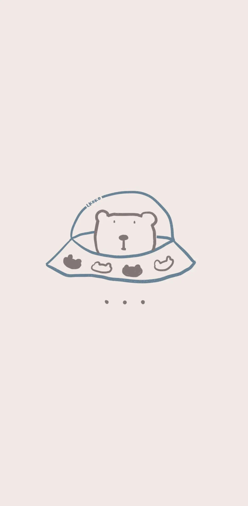

干货 | 5分钟治好拖延症，子弹笔记教程 !
和 我 一 起 治 愈 生 活

图：@网络
文：@秋秋
大家好，我是秋秋子。
最近一段时间我真的要忙翻天了。
学校暑假要去上课、我自己报了一个健康管理师马上开课、答应大家做读书群但不想弄成小众付费圈子，干脆开了新的公众号用来读书~
但一切忙碌都来自于当初的规划：取得研究生学历、考健康管理师、与大家一起进步。没有任何一件事与最初目标背道而驰。
所以如果你还没有清晰的规划和时间管理方法，
那这篇文章，一定能帮到你~

子弹笔记法
子弹笔记法：最初来自我看的这本书。看书名我还以为只是一种做笔记的方式。

看完之后我才叹为观止，原来时间管理还能这样。
子弹笔记: 顾名思义就是像子弹一样简洁快速高效。
所以5分钟，我会尽量让大家了解怎么通过子弹笔记做自我规划和时间管理，更多内容可自行翻阅书籍。
如何5分钟做好规划？
其实，你只需要拿出一个空白的本子，纸和笔。
是的，就是这么简单。所以我希望看到这篇文章你就收藏下来，或者现在就去做（我当时就是立马做了）。

本子标记好页码，前面1-4页先空出来, 留着后面做目录。之后正式开始：
step 1:
从第5页开始，每页这样均匀分成这样的3等份，写上12个月月份。

之后在这样的小方格中写出这个月的大事件，以及你每个月想做的事情。
比如我7月，想要粉丝25万，每天坚持阅读。
8月我想开始做B站.....

这样的好处就是最后回顾每个月的时候都非常清晰。
而且上来就写年计划，很容易被大目标吓到或者压根不知道写啥。
step 2:
之后开始你的月度计划。
从第9页开始，左面画一个日历,我用喵喵机打印的，右边写上这个月你要做的事情：

当这件事有具体执行日期的时候，就在左边日历上标注出来，这样做的好处是每个月要做的事情都一目了然。

知道我们为什么经常会拖延吗？就是在没有一个宏观的规划下，每一天都是零散的开始。做与不做没区别，所以你才不去做。
step 3:
最后，开始写日计划。

这个非常简单，只要把每天想做的事情写上去就可以。
我现在用的这个本子也是之前写成功日记的本子，两者结合，一个本子做完所有规划、效率加倍：

（成功日记真的要坚持）
积极尝试的力量
整个过程也就5分钟，但是这5分钟，或许是最简单改变你拖延症没规划的方法。
我们再来复习一下：

（图片建议保存，真的很棒）
如果你还没有更好的时间规划方法，相信我，这个认真做完之后，接下来你的每一天都会非常清晰。
所以迈开步子去尝试。我希望所有的学习方法、app推荐，都是为了提升效率和美好生活开拓路径。
不是这个方法本身有多独特，而是在尝试的过程中你一天天的坚持下来了。
我不期待每个方法都能有立竿见影的效果，多去尝试、你会开拓出更适合自己的学习方法~
总之就是要去试一试呀~
一个通知☕️
之前答应大家，6月下半旬会开读书群，但是考虑再三，我决定不开了。
我不想用付费的方式去做社群，而是觉得读书大家都可以参与，但无力开设很多群。
所以我开了新的公众号，每天会发读书笔记和思维导图，当我在里面发了足够多的读书笔记的时候我会把账号告诉大家，每天都可以一起打卡~
但是一定是我筹备好了在说,希望大家给我一些时间，谢谢~

公众号规则又变啦~
大家觉得文章写的认真，记得给秋秋点个赞哦：）
其他文章推荐：

原创文章，转载请告知本人并标注来源
工作联系：17865514429 （微信）
请注明来意 :)
@微博：秋秋一日甜
喜欢记得星标，让我们一起成长